The AI Assistant, embedded directly into the platform's existing communication tools.
Problem
Writing resident communications was slow, inconsistent, and error-prone across languages.
Discover
Reviewed existing strategic research and scanned the competitive AI landscape.
Define
Organized findings into milestones, scoped against a fixed six-month dev budget.
Introduce
Shipped the base generation feature fast to start collecting real usage feedback.
Iterate
Built on that feedback with tone, length, and translation controls.
Results
386 beta sign-ups and 450 messages generated, with more measurement still to come.
01Problem
Property managers were losing time and consistency to a task that should have been quick.
Property managers invest considerable time crafting the right message, resulting in:
- An increased workload
- Overly complicated communication
- Inconsistencies in the quality of communication
- Miscommunication for recipients speaking other languages
Property managers were already turning to outside generative AI tools to help craft these communications — but those tools had no context on their portfolio, leading to weaker output than what we could offer directly inside the platform. Generative AI for communications was also fast becoming a standard expectation, valued for saving time and improving quality and professionalism.
"As a Property manager, I need an easy way to generate communication messages within the platform, so that I don't have to formulate communications myself."
02Discover
Rather than start from scratch, I began with what we already knew — then filled the gaps with a hard look at the competitive landscape.
Analyzing opportunities from strategic research
I reviewed existing strategic research on the future of AI and automation in PropTech, along with direct customer feedback on AI expectations. This was information my team already had, so revisiting it saved time compared to kicking off a brand-new research effort. I worked with my product manager to organize these findings into opportunity areas, so I could begin identifying common themes in feedback on AI communications.
Communication ranked as the area of highest importance for AI: customers said AI/automation would be most beneficial when generating mailings and templates, automating responses, and automating reminders, communications, and announcements. That finding is what shaped the milestones I defined next.
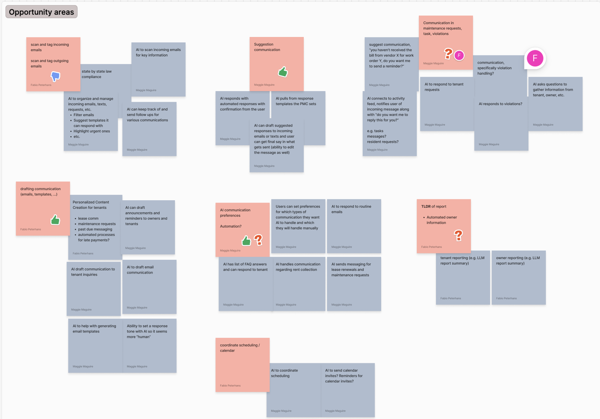
Brainstorming ideas around opportunity areas.
Competitive analysis
I collected UX inspiration from both direct competitors in PropTech and companies considered leaders in the broader generative AI space. The generative AI space was moving fast, and I wanted to understand how our direct competitors were approaching AI communications specifically, as well as what new UI patterns were emerging more broadly — even from companies outside our industry.
I documented my findings, took notes on what could work for us, and referred back to them while crafting low-fidelity designs.
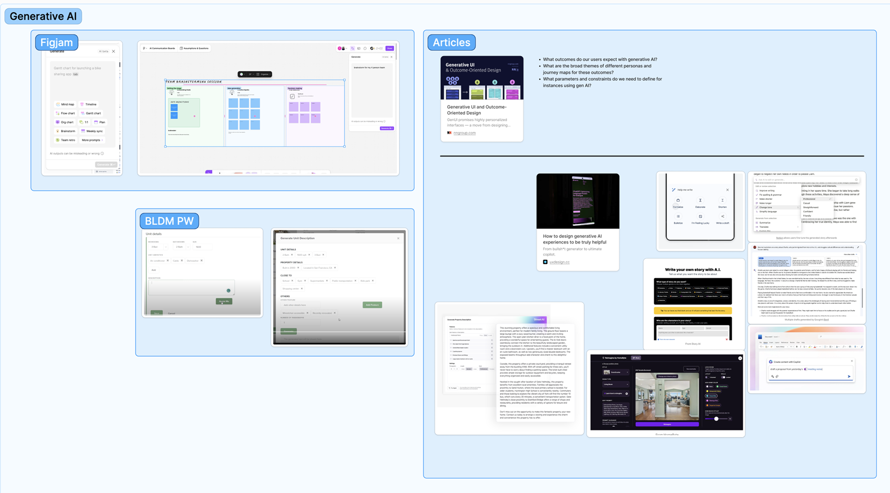
Snapshot of competitive analysis.
03Define
I worked with my product manager and lead engineer to organize these opportunities into milestones, grounded in two business goals: releasing AI features quickly, and focusing on high-value features used across the platform. The business had also allocated a fixed six-month dev budget for AI Communications, so we had to prioritize ruthlessly — deciding what was realistically achievable in that window rather than trying to do everything at once.
That led to three milestones for AI Communication:
Generative AI in Communications
AI recipient search (cut)
Enhanced AI capabilities
AI recipient search was cut early: it was proving to be a lot of effort relative to the impact it would deliver in a first release. We flagged it as a strong candidate for a future milestone, once we had more usage data to justify the investment.
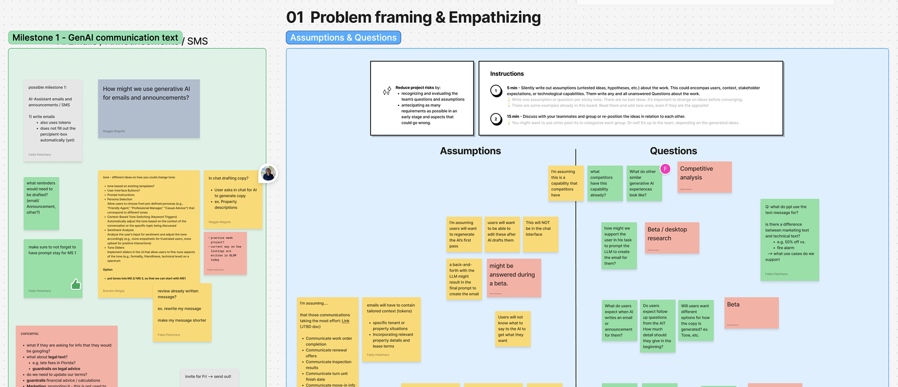
Snapshot of team discussions and notes around problem framing for each milestone.
04Introduce
Ship the core feature fast, learn from real usage, then build on top of it.
Milestone 1 introduced the new Write with AI component, allowing users to generate communications based on their prompts.
We wanted to get this base generation capability into property managers' hands as quickly as possible, so we could start collecting real beta feedback and usage data. While that was happening, I continued designing the more advanced Milestone 2 capabilities in parallel, building directly on top of this first release.
Design screens are password protected
This project includes work that isn't publicly shareable.
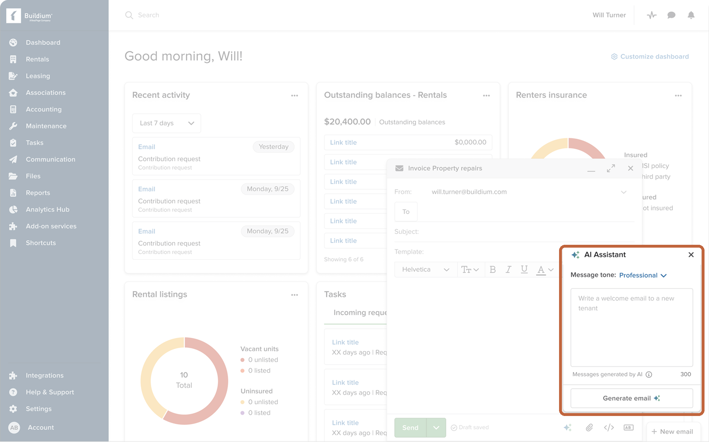
The AI Assistant, embedded directly into the platform's existing communication tools.
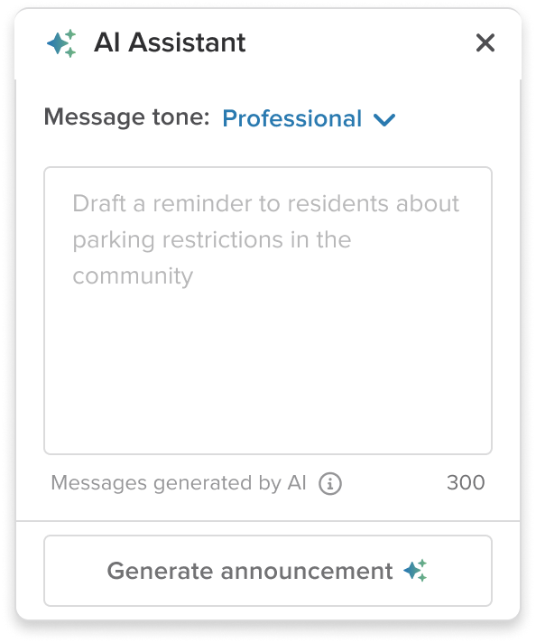
Initial state with guiding placeholder copy.
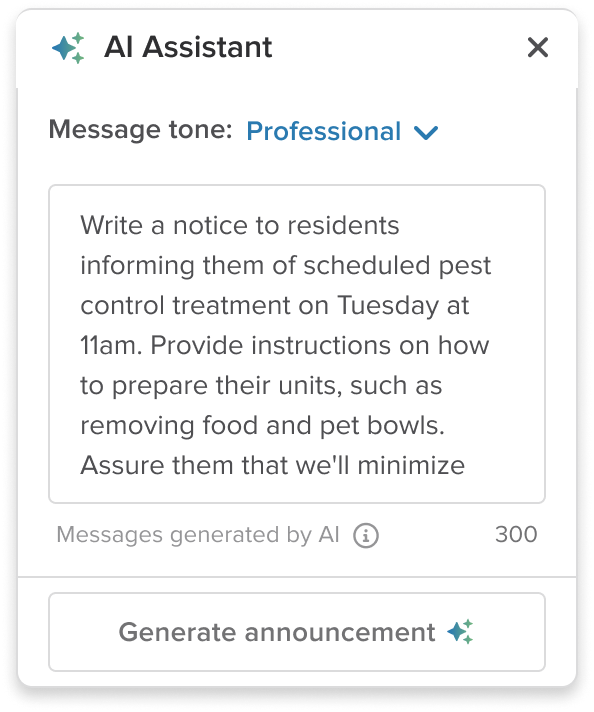
Prompt entered by user.
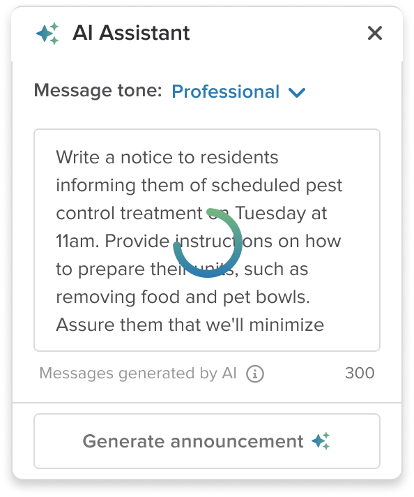
Loading state.
I placed the Write with AI popover at the three places property managers were already sending communications — announcements, email, and text. The feature lived inside their existing workflow instead of asking them to learn a new one:
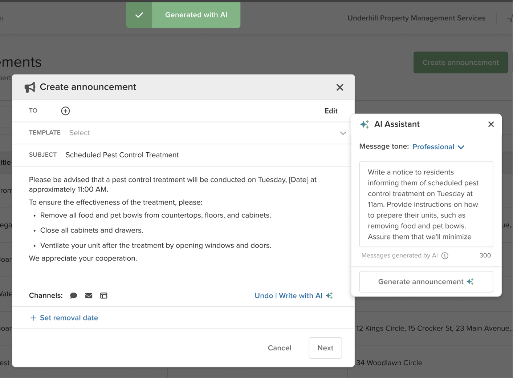
Write with AI in resident announcements.
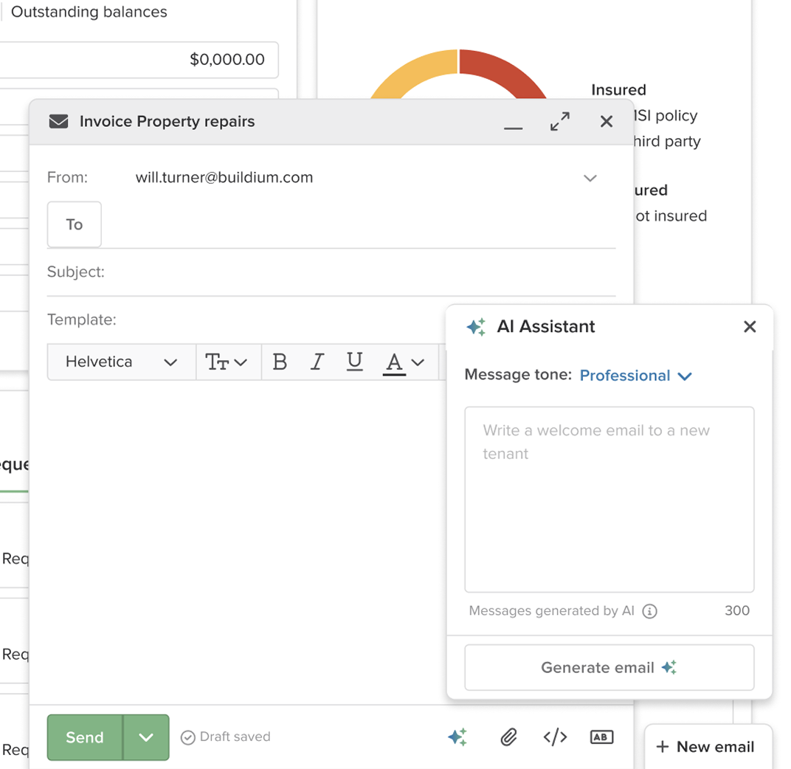
Write with AI in the email composer.
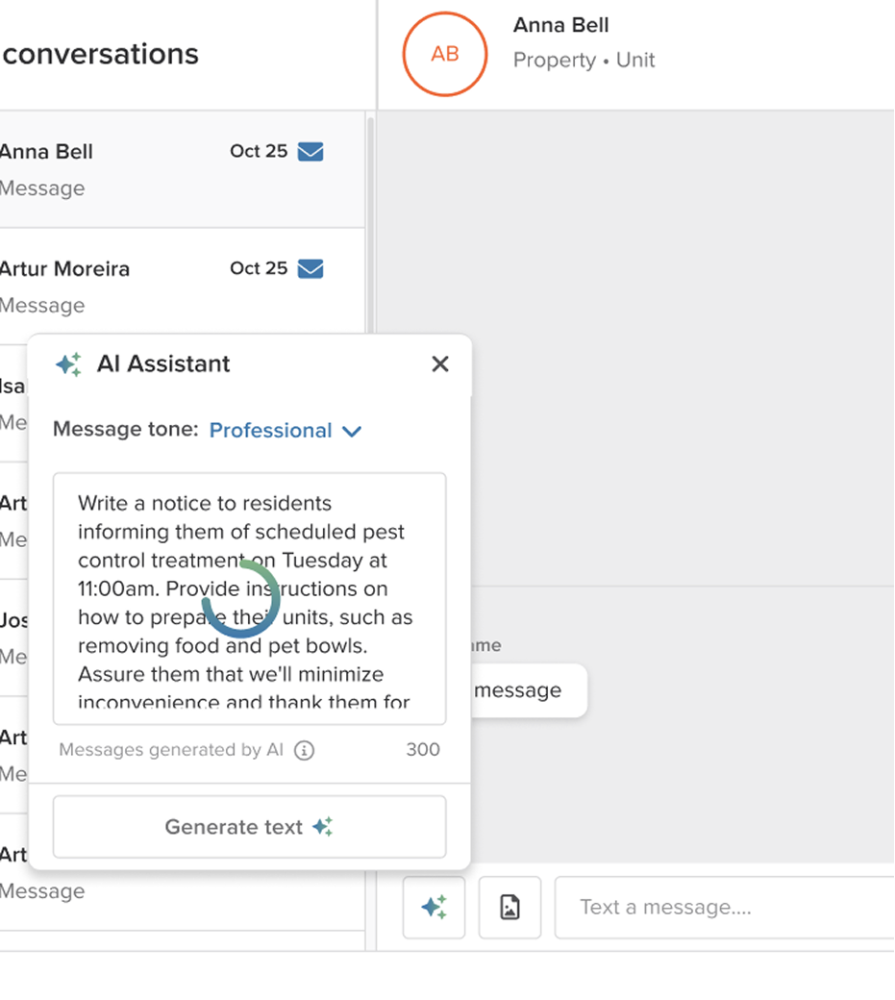
Write with AI in text messages.
05Iterate
Based on the usage data and feedback we collected from Milestone 1, Milestone 2 introduced the ability for users to describe revisions, update message tone, adjust length, create comprehensive messaging from notes, and translate communications into French and Spanish.
Design screens are password protected
This project includes work that isn't publicly shareable.
These specific enhancements came from a few places. Length control addressed a real constraint — some communication channels have character limits, so being able to quickly shorten a message while keeping its purpose intact was valuable. Translation mattered because many property managers have a significant number of Spanish- and French-speaking residents. Revise came directly out of competitive analysis: I saw the benefit in letting users "work with" the AI to fine-tune a message rather than accepting a single output. The tone options mirrored what was already popular among competitors, and our own team discussions confirmed they'd resonate with our customers too. Overall, these four capabilities showed up across other generative AI tools, were relatively low effort to build, and were broadly useful across property management use cases.
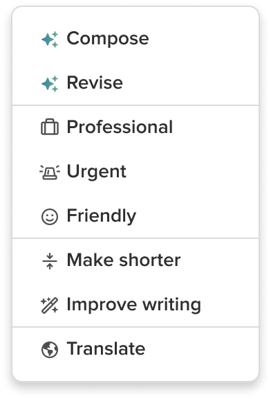
One click to update tone, length, quality, or language.
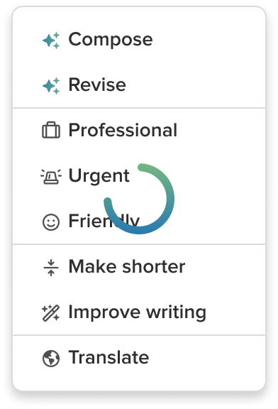
Loading state.
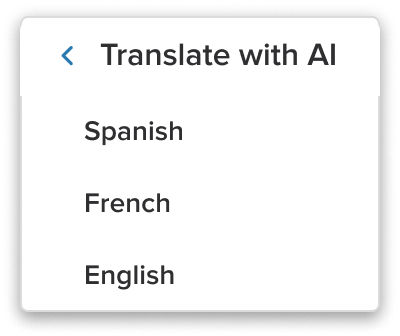
Language selection.
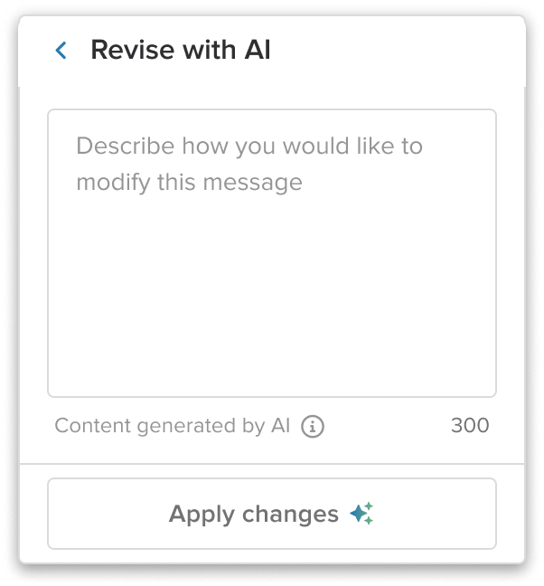
Describe revisions.
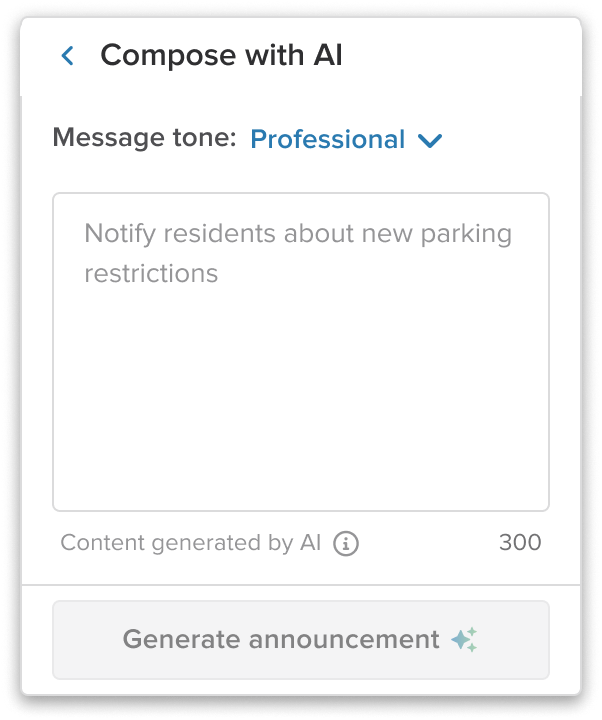
Message generation from Milestone 1.
Success messaging.
These enhanced capabilities shipped across the same three surfaces:
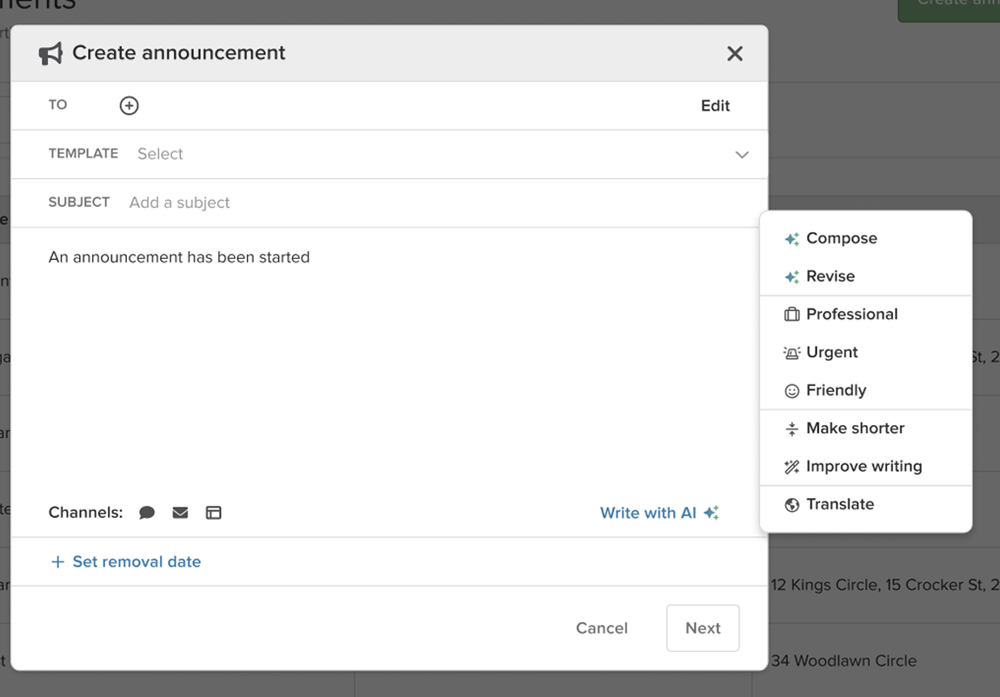
Enhancements in resident announcements.
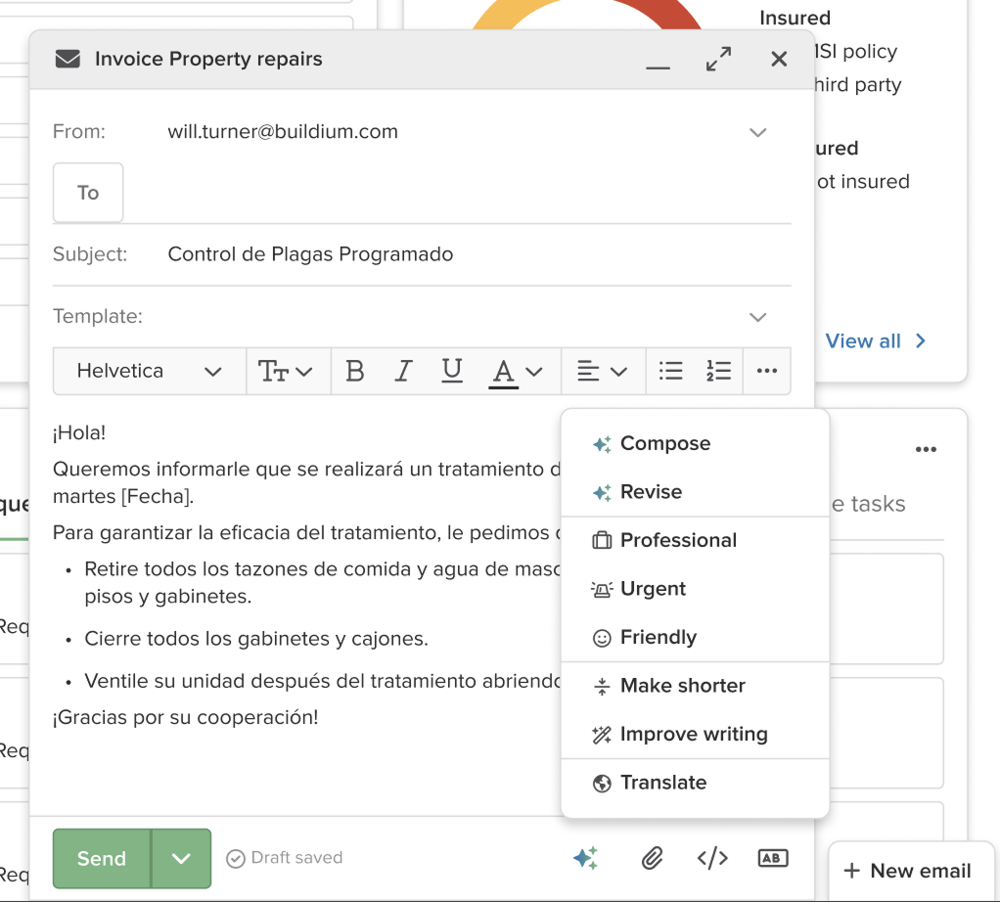
Enhancements in the email composer.
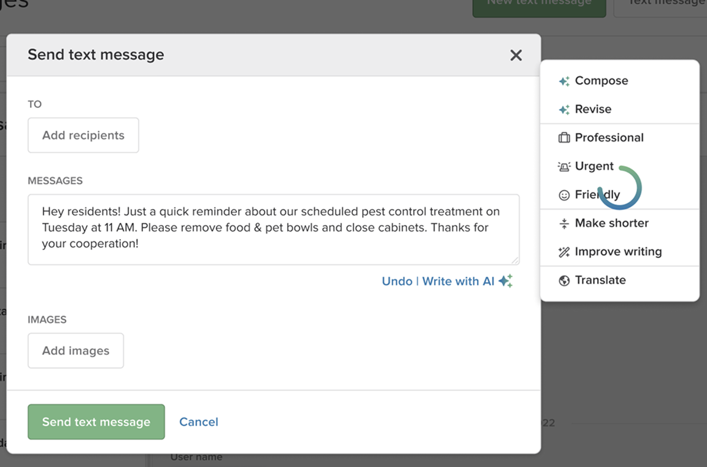
Enhancements in text messages.
06Results
Strong early adoption, with the full impact still coming into focus.
Usage as of March 11, 2025:
A user survey and more granular KPI measurement are still pending.
"I don't send them right away because sometimes I'm emotional and you don't want to send. Now I can write my nasty notes in the e-mail what I want to say and not have to wait 24 hours and go back and reread it before I send it out."
— User comment on Write with AI